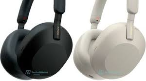
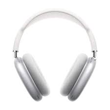
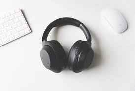

headphone, small loudspeaker (earphone) held over the ear by a band or wire worn on the head. Headphones are commonly employed in situations in which levels of surrounding noise are high, as in an airplane cockpit, or where a user such as a switchboard operator needs to keep the hands free, or where the listener is moving about or wants to listen without disturbing other people. A headphone may be equipped with one earphone or two and may include a miniature microphone, in which case it is called a headset. For listening to stereophonically reproduced sound, stereo headphones may be used, with separate channels of sound being fed to the two earphones.

microphone, device for converting acoustic power into electric power that has essentially similar wave characteristics. While those on telephone transmitters comprise the largest class of microphones, the term in modern usage is applied mostly to other varieties.

Apart from telephone transmitters, microphones are most widely applied in hearing aids, sound-recording systems (principally magnetic and digital tape recorders), dictating machines, and public-address systems. Microphones are extensively used in communications systems, radio or wire, to provide better response quality than with conventional telephone transmitters, or for hands-free operation.